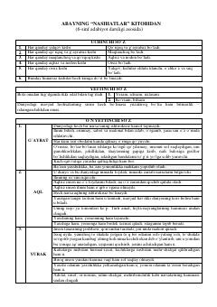

NAbay Qo'nonboyevning insoniy fazilatlar va axloq haqidagi falsafiy hikmatlari to'plami.
Ushbu kitob buyuk qozoq shoiri va mutafakkiri Abay Qo'nonboyevning mashhur 'Nasihatlar' (Qora so'zlar) asaridan tanlanmalarni o'z ichiga oladi. Asarda insoniy fazilatlar, ilm-fan, axloq va jamiyatdagi munosabatlar haqida chuqur falsafiy fikrlar bayon etilgan.